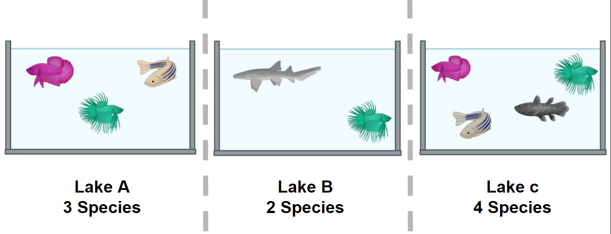

17 Explorando la diversidad con librerías de R
17.1 Primera inmersión en la diversidad
La diversidad de especies, en su definición más simple, es el número de especies en un área determinada y su abundancia relativa (uniformidad). Una vez que conocemos la composición taxonómica de nuestros metagenomas, podemos realizar análisis de diversidad. Aquí analizaremos las dos métricas de diversidad más utilizadas: la diversidad α (dentro de un metagenoma) y la diversidad β (entre metagenomas).
- Diversidad α: Puede representarse únicamente como riqueza ( es decir, el número de especies diferentes en un entorno), o también puede medirse considerando la abundancia de las especies en el entorno ( es decir, el número de individuos de cada especie en el entorno). Para medir la diversidad α, utilizamos índices como el de Shannon, el de Simpson, el de Chao1, etc.

- La diversidad β es la diferencia (medida como distancia) entre dos o más entornos. Puede medirse con métricas como la disimilitud de Bray-Curtis, la distancia de Jaccard o la distancia Unifrac, por nombrar algunas. Cada una de estas medidas se centra en una característica de la comunidad ( p. ej., la distancia Unifrac mide la relación filogenética entre las especies de la comunidad).
En el siguiente ejemplo, analizaremos los componentes α y β de la diversidad de un conjunto de datos de peces en tres lagos. La forma más sencilla de calcular la diversidad β es calcular las especies distintas entre dos lagos (sitios). Tomemos como ejemplo la diversidad entre el lago A y el lago B. El número de especies en el lago A es 3. A esta cantidad, restaremos el número de estas especies que se comparten con el lago B: 2. Por lo tanto, el número de especies únicas en el lago A en comparación con el lago B es (3-2) = 1. A este número, sumaremos el resultado de las mismas operaciones, pero ahora tomaremos el lago B como nuestro sitio de referencia. Al final, la diversidad β entre el lago A y el lago B es (3-2) + (3-2) = 2. Este proceso puede repetirse, tomando cada par de lagos como los sitios de enfoque.

17.2 diversidad α
| Índices de diversidad | Descripción |
|---|---|
| Shannon (H) | Estimación de la riqueza y la uniformidad de especies. Mayor importancia para la riqueza. |
| Simpson (D) | Estimación de la riqueza y la uniformidad de especies. Mayor importancia para la uniformidad. |
| Caos1 | Abundancia basada en especies representadas por un solo individuo (singletons) y dos individuos (doubletons). |
- Shannon (H):
| Variable | Definición |
|---|---|
| H= −∑Syo = 1pagienpagiH=−∑i=1Spagienpagi | Definición |
| SS | Número de OTU |
| pagipagi | La proporción de la comunidad representada por OTU i |
- Simpson (D)
| Variable | Definición |
|---|---|
| D =1∑Syo = 1pag2iD=1∑i=1Spagi2 | Definición |
| SS | Número total de especies en la comunidad |
| pagipagi | Proporción de la comunidad representada por OTU i |
- Caos1
| Variable | Definición |
|---|---|
| Sc h a o 1=SObs+F1× (F1− 1 )2 × (F2+ 1 )Sdohao1=SOhbs+F1×(F1−1)2×(F2+1) | Recuento de singletons y doubletons respectivamente |
| F1,F2F1,F2 | Recuento de singletons y doubletons respectivamente |
| Sc h a o 1=SObsSdohao1=SOhbs | El número de especies observadas |
17.2.1 diversidad β
La diversidad β mide qué tan diferentes son dos o más comunidades, ya sea en su composición (riqueza) o en la abundancia de los organismos que la componen (abundancia).
Disimilitud de Bray-Curtis: Diferencia en riqueza y abundancia entre entornos (muestras). Ponderación de la abundancia. Mide las diferencias de 0 (comunidades iguales) a 1 (comunidades diferentes).
Distancia de Jaccard: Se basa en la presencia o ausencia de especies (diversidad). Va de 0 (misma especie en la comunidad) a 1 (ninguna especie en común).
UniFrac: Mide la distancia filogenética; la similitud entre los árboles de cada comunidad. Existen dos tipos: sin ponderaciones (diversidad) y con ponderaciones (diversidad y abundancia).
17.3 Ejercicio 1: Medida simple de diversidades alfa y beta.
En la siguiente imagen se muestran dos lagos con diferentes especies de peces: Figura 3.
¿Cuál de las siguientes opciones es verdadera para la diversidad alfa en los lagos A y B, y la diversidad beta entre los lagos A y B, respectivamente?
4, 3, 1
4, 3, 5
9, 7, 16
Por favor, pegue su resultado en el documento colaborativo proporcionado por los instructores. ¡ Aquí hay leones !
17.4 Solución
Respuesta: 2. 4, 3, 5. La diversidad alfa , en este caso, es la suma de las especies. El lago A tiene 4 especies y el lago B 3. La diversidad beta se refiere a la diferencia entre el lago A y el lago B. Si usamos la fórmula de la Figura 2, vemos que para calcular la diversidad beta, debemos detectar el número de especies y el número de especies compartidas en ambos lagos. Solo hay una especie compartida, así que debemos restar el número de especies compartidas al total de especies y sumar el resultado. En este caso, en el lago A, tenemos 4 especies y una especie compartida, siendo el lago B (4-1)=3, y en el lago B tenemos tres especies y una especie compartida, siendo el lago A (3-1)=2. Si sumamos 3+2, el resultado es 5.
17.5 Diversidad alfa de la gráfica
Queremos conocer la diversidad bacteriana, así que eliminaremos todos los organismos no bacterianos de nuestro merged_metagenomesobjeto Phyloseq. Para ello, crearemos un subconjunto de todos los grupos bacterianos y lo guardaremos.
> merged_metagenomes <- subset_taxa(merged_metagenomes, Kingdom == "Bacteria") Ahora veamos algunas estadísticas de nuestros metagenomas. La salida del sample_sums()comando muestra cuántas lecturas hay en la biblioteca. La biblioteca JC1A es la más pequeña, con 18412 lecturas, mientras que la biblioteca JP4D es la más grande, con 149590 lecturas.
> merged_metagenomes phyloseq-class experiment-level object otu_table() OTU Table: [ 4024 taxa and 3 samples ] tax_table() Taxonomy Table: [ 4024 taxa by 7 taxonomic ranks ] > sample_sums(merged_metagenomes) JC1A JP4D JP41 18412 149590 76589 Además, los valores máximo, mínimo y medio de la salida summary()nos dan una idea de la uniformidad. Por ejemplo, la OTU que aparece más veces en la muestra JC1A aparece 399 veces, y en promedio, en la muestra JP4D, una OTU aparece en 37,17 lecturas.
> summary(merged_metagenomes@otu_table@.Data) JC1A JP4D JP41 Min. : 0.000 Min. : 0.00 Min. : 0.00 1st Qu.: 0.000 1st Qu.: 3.00 1st Qu.: 1.00 Median : 0.000 Median : 7.00 Median : 5.00 Mean : 4.575 Mean : 37.17 Mean : 19.03 3rd Qu.: 2.000 3rd Qu.: 21.00 3rd Qu.: 14.00 Max. :399.000 Max. :6551.00 Max. :1994.00 Para tener una representación más visual de la diversidad dentro de las muestras (es decir, diversidad α), ahora podemos mirar un gráfico creado usando Phyloseq:
> plot_richness(physeq = merged_metagenomes, measures = c("Observed","Chao1","Shannon")) Cada una de estas métricas puede ofrecer una perspectiva de la distribución de las OTU en nuestras muestras. Por ejemplo, el índice de diversidad Chao1 otorga mayor peso a los singletons y doubletons observados en nuestras muestras, mientras que Shannon es un índice de entropía que señala la imposibilidad de extraer dos lecturas del metagenoma y que estas pertenecerán a la misma OTU.
Una precaución al comparar muestras es que las diferencias en algunos índices alfa pueden deberse a la diferencia en el número total de lecturas de las muestras. Una muestra con más lecturas tiene mayor probabilidad de tener más OTU diferentes, por lo que se requiere cierta normalización. En este caso, trabajaremos con abundancias relativas, pero otros enfoques podrían ayudar a reducir este sesgo.
17.6 Abundancias absolutas y relativas
A partir de los recuentos de lecturas que acabamos de ver, es evidente que existe una gran diferencia en el número total de lecturas secuenciadas en cada muestra. Antes de continuar con el procesamiento de los datos, verifique si hay lecturas no identificadas. Marcadas como “en blanco” (es decir, ““) en los diferentes niveles taxonómicos:
> summary(merged_metagenomes@tax_table@.Data== "") Kingdom Phylum Class Order Family Genus Species Mode :logical Mode :logical Mode :logical Mode :logical Mode :logical Mode :logical Mode :logical FALSE:4024 FALSE:4024 FALSE:3886 FALSE:4015 FALSE:3967 FALSE:3866 FALSE:3540 TRUE :138 TRUE :9 TRUE :57 TRUE :158 TRUE :484 Con el comando anterior, podemos ver espacios en blanco en diferentes niveles taxonómicos. Por ejemplo, tenemos 158 espacios en blanco a nivel de género. Aunque podríamos esperar ver algunos espacios en blanco a nivel de especie o incluso de género, eliminaremos los de género para continuar con el análisis.
> merged_metagenomes <- subset_taxa(merged_metagenomes, Genus != "") #Only genus that are no blank > summary(merged_metagenomes@tax_table@.Data== "") Kingdom Phylum Class Order Family Genus Species Mode :logical Mode :logical Mode :logical Mode :logical Mode :logical Mode :logical Mode :logical FALSE:3866 FALSE:3866 FALSE:3739 FALSE:3860 FALSE:3858 FALSE:3866 FALSE:3527 TRUE :127 TRUE :6 TRUE :8 TRUE :339 A continuación, dado que nuestros metagenomas tienen diferentes tamaños, es imperativo convertir el número de lecturas asignadas (es decir, abundancia absoluta) en porcentajes (es decir, abundancias relativas) para compararlas.
En este momento nuestra tabla OTU se ve así:
> head(merged_metagenomes@otu_table@.Data) JC1A JP4D JP41 1060 32 420 84 1063 316 5733 1212 2033869 135 1232 146 1850250 114 846 538 1061 42 1004 355 265 42 975 205 Para realizar esta transformación a porcentajes, aprovecharemos una función de Phyloseq.
> percentages <- transform_sample_counts(merged_metagenomes, function(x) x*100 / sum(x) ) > head(percentages@otu_table@.Data) JC1A JP4D JP41 1060 0.1877383 0.3065134 0.1179709 1063 1.8539161 4.1839080 1.7021516 2033869 0.7920211 0.8991060 0.2050447 1850250 0.6688178 0.6174056 0.7555755 1061 0.2464066 0.7327130 0.4985675 265 0.2464066 0.7115490 0.2879052 Ahora, estamos listos para comparar las abundancias dadas por porcentajes de las muestras con índices de diversidad beta.
17.7 Diversidad beta
Como mencionamos anteriormente, la diversidad beta mide la similitud o diferencia entre nuestras muestras (superposición entre conjuntos de especies o unidades taxonómicas operativas definidas discretamente). Para medir esto, necesitamos calcular un índice que se ajuste a los objetivos de nuestra investigación. Con el siguiente código, podemos mostrar todas las posibles métricas de distancia que Phyloseq puede utilizar:
> distanceMethodList $UniFrac [1] "unifrac" "wunifrac" $DPCoA [1] "dpcoa" $JSD [1] "jsd" $vegdist [1] "manhattan" "euclidean" "canberra" "bray" "kulczynski" "jaccard" "gower" [8] "altGower" "morisita" "horn" "mountford" "raup" "binomial" "chao" [15] "cao" $betadiver [1] "w" "-1" "c" "wb" "r" "I" "e" "t" "me" "j" "sor" "m" "-2" "co" "cc" "g" [17] "-3" "l" "19" "hk" "rlb" "sim" "gl" "z" $dist [1] "maximum" "binary" "minkowski" $designdist [1] "ANY" Describir todas estas posibles métricas de distancia está más allá del alcance de esta lección, pero aquí mostramos cuáles son las que necesitan una relación filogenética entre las especies-OTU presentes en nuestras muestras:
Unifrac
Peso-Unifrac
DPCoA
No disponemos de un árbol filogenético ni de relaciones filogenéticas. Por lo tanto, no podemos usar ninguno de estos tres. Usaremos Bray-Curtis, ya que es una de las métricas de distancia más robustas y utilizadas para calcular la diversidad beta.
¡Sigamos así! Ya tenemos todo lo necesario para comenzar el análisis de diversidad beta. Usaremos el comando Phyloseq ordinatepara generar un nuevo objeto donde se asignarán las distancias entre nuestras muestras después de calcularlas. Para este comando, debemos especificar el método que usaremos para generar una matriz. En este ejemplo, usaremos el Escalamiento Multidimensional No Métrico o NMDS . NMDS intenta representar la disimilitud entre objetos en un espacio de baja dimensión; en este caso, un gráfico bidimensional.
> meta_ord <- ordinate(physeq = percentages, method = "NMDS", distance = "bray") Si recibe algún mensaje de advertencia después de ejecutar este script, no se preocupe. Esto se debe a que solo tenemos tres muestras. Con pocas muestras, el algoritmo advierte sobre la poca dificultad para generar la matriz de distancias.
Por ahora, solo necesitamos el comando plot_ordination()para ver los resultados de nuestro análisis de diversidad beta:
> plot_ordination(physeq = percentages, ordination = meta_ord)
En este gráfico NMDS, cada punto representa la abundancia combinada de todas sus OTU. Como se muestra, cada muestra ocupa espacio en el gráfico sin formar grupos. Este resultado se debe a que cada muestra es lo suficientemente diferente como para considerarse un punto independiente en el espacio NMDS.
17.8 Ejercicio 3: Agregar metadatos a la visualización de la diversidad beta
En la siguiente figura, el gráfico de diversidad beta que generamos anteriormente se ha enriquecido. Observe el código a continuación y responda:
1) ¿Qué instrucción coloreó las muestras según su tratamiento correspondiente?
2) ¿Qué hizo la instrucción geom_text?
3) ¿Qué otra diferencia observa con nuestro gráfico anterior?
4) ¿Observa alguna agrupación de las muestras según su tratamiento?

metadata_cuatroc <- data.frame(Sample=c("JC1A", "JP4D", "JP41"), Treatment=c("Control mesocosm", "Fertilized pond", "Unenriched pond")) # Making dataframe with metadata rownames(metadata_cuatroc) <- metadata_cuatroc$Sample # Using sample names as row names percentages@sam_data <- sample_data(metadata_cuatroc) # Adding metadata to sam_data table of phyloseq object percentages meta_ord <- ordinate(physeq = percentages, method = "NMDS", distance = "bray") # Calculating beta diversity plot_ordination(physeq = percentages, ordination = meta_ord, color = "Treatment") + # Plotting beta diversity. geom_text(mapping = aes(label = Sample), size = 3, vjust = 1.5) 17.9 Discusión: Índices de diversidad
¿Por qué cree que necesitamos diferentes índices para evaluar la diversidad? ¿Qué índice utilizará para evaluar el impacto de los taxones raros y poco abundantes?
17.10 Solución
Será difícil (si no imposible) tomar dos comunidades y observar la misma distribución de todos los miembros. Este resultado se debe a que hay muchos factores que afectan a estos linajes. Algunos de los factores ambientales son la temperatura, el pH y la concentración de nutrientes. Además, las interacciones de estas poblaciones, como la competencia, la inhibición de otras poblaciones y la velocidad de crecimiento, son un importante impulsor de la variación ( factor biótico ). Una combinación de los factores mencionados anteriormente puede interactuar para mantener algunas poblaciones con baja abundancia ( taxones raros). Para tener formas de evaluar hipótesis sobre cuáles de estos procesos pueden estar afectando a la comunidad, utilizamos todos estos diferentes índices. Algunos enfatizan el número de especies y otros la uniformidad de las OTU. Para evaluar el impacto de los linajes de baja abundancia, un índice de diversidad alfa ampliamente utilizado es el índice Chao1.